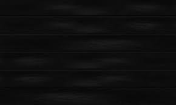

Welkom op mijn allereerste website, Neem gerust een kijkje!
Wie ben ik?
🌟 Wie ben ik?
Ik ben Nassim, 16 jaar oud, geboren op 1 oktober 2009 in Heerlen. Ik zit in havo 4 op het Vlietland College en ik volg een E&M-profiel 📚. Ik woon in Voorschoten 🏡.
Naast school werk ik met veel plezier bij De Beren 🍴. Het is een leuke baan waar ik veel leer en nieuwe ervaringen opdoe.
Wat doe ik in mijn vrije tijd?
In mijn vrije tijd ben ik vaak aan het voetballen ⚽, omdat ik sporten leuk vind en het me fit houdt. Ook ga ik regelmatig naar de sportschool 💪 om sterker en fitter te worden.
Als ik me verveel speel ik op de PlayStation 🎮 of zit ik gewoon even op mijn telefoon 📱.
Wat is mijn favoriete eten?
Mijn favoriete eten is een lekkere burger 🍔.
Mijn droomvakantie zou zijn naar een tropisch land 🌴☀️.
Waar zit ik op school en welk vakkenpakket heb ik?

Ik zit op het Vlietland College en volg een E&M-profiel 📚.
Mijn vakken zijn:
Nederlands
Engels
Wiskunde A
Economie
Bedrijfseconomie (ik wil graag Frans kiezen)
LEF
CKV
Bewegen en sport
Geschiedenis
Informatica
Maatschappijleer
LOB
Op deze website kun je meer te weten komen over mijn interesses en vind je informatie over verschillende onderwerpen.